There may be times when one user prepares a document and sends it to another user for signature. This ability is helpful to keep track of Orders, when they come in, if they are rejected, or when they are referred to a Judge or DDR for signature.
To create a referral, the user preparing the document follows these steps:
NOTE – A document must contain an image before it can be referred.
A browser window will appear to confirm that the document has been saved as an image in CEIS.
Click the link in the browser window to return to CEIS. The window will close and you will be back on the CEIS data capture screen
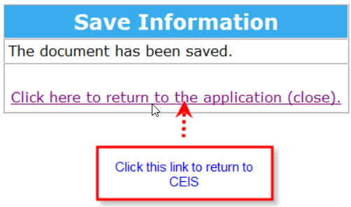
If you do not see the above browser window contact AG CEIS Support.
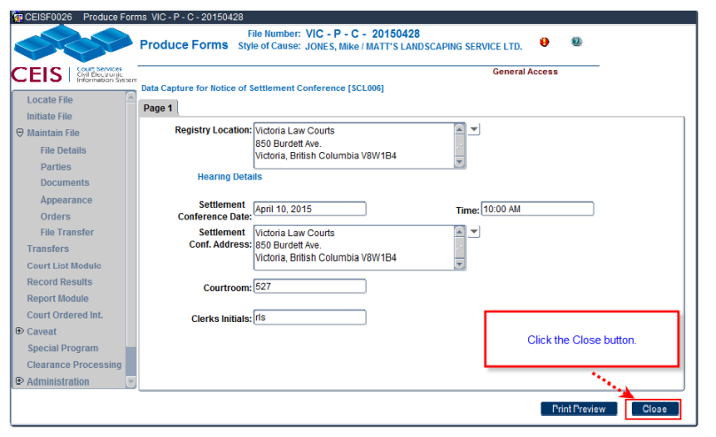
The Referral tab is now active because the document contains an image. The Referral tab is inactive for documents that do not have an image
The Print Copies tab remains inactive at this stage because the document has not yet been printed.
7) Click the Add Referral Button. The Referred By, Date Referred and Location Referred To fields will automatically fill in.
8) Checked By and Date Checked fields are optional but useful and we recommend you enter the data for those fields as well.
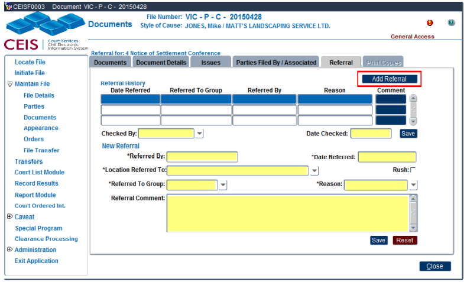
Date Referred: The date the order is referred. (This is the date used when generating court lists.) This is a mandatory field.
Court List: The court list type that the referral is to appear on. This is a mandatory field.
Reason: The reason for the referral.
Assigned To/OR: Select the appropriate Judge, Associate Judge, or Registrar name from the drop-down list; or use "OR" to indicate that it is assigned to a Duty Judge, Duty Associate Judge, or Duty Registrar.
File Attached?: Check this box if the file has been sent with the referral; if the file has not been sent, leave it blank.
Date Rejected: The date the referral was rejected (if applicable).
Date Signed: The date the referral was signed (if applicable).
Referral Comment: Enter any additional details or notes here.
9) When referring a document for signature pick the Signing/Review Reason
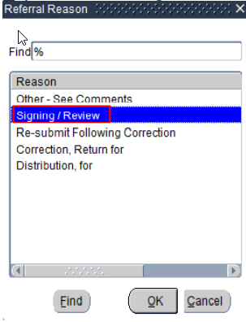
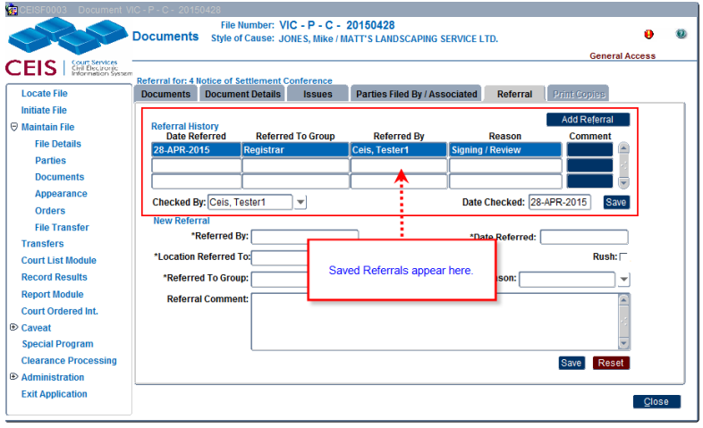
10) Once all the data entry is complete click SAVE to save the referral and send the file to the Documents for Signing Inbox.Navigate to the Locate File screen
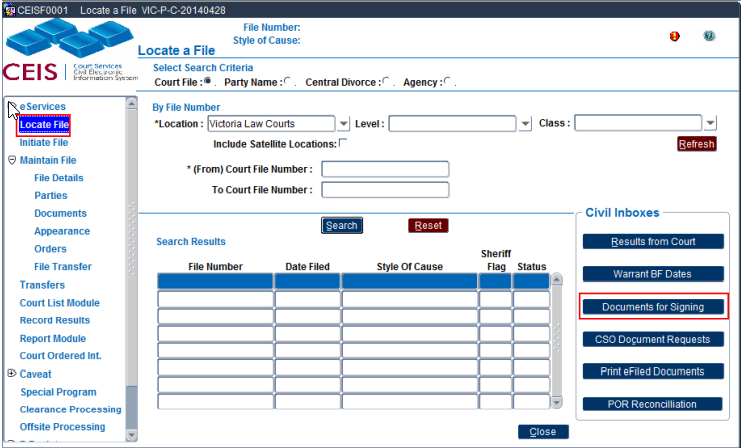
Click the Documents for Signing Inbox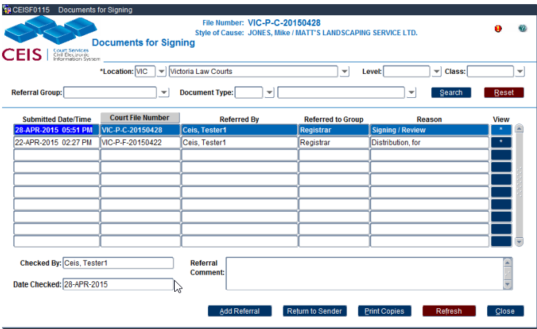
Click * the button for the document.
The Adobe preview will appear.
To sign follow the steps for [Signing, Stamping, Printing and Saving. (Adobe toolbar).]
Once a document is Signed you can choose depending on the workflow in your location to either Stamp or Save.
If you choose Stamp the user that is signing the document will be doing the distribution of the document.
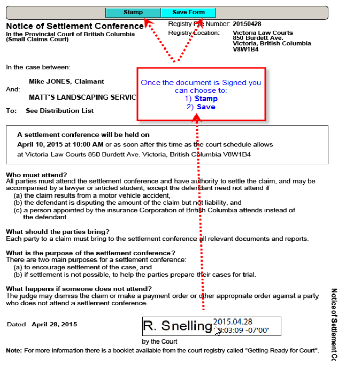
If you choose Save, the user that is signing the document will be referring the document back to the user who sent it, for distribution.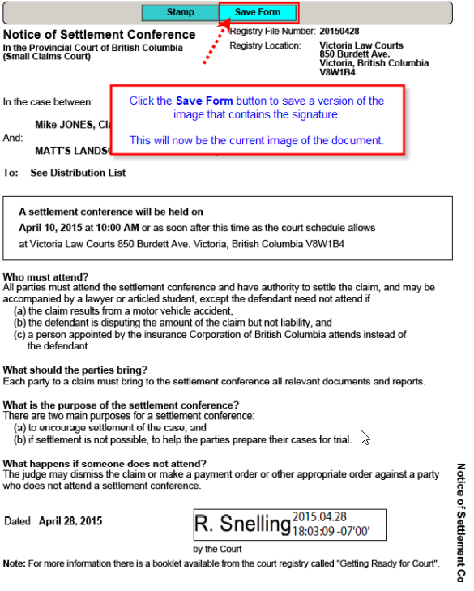
1) A browser window will appear confirming the image has been saved to CEIS.
2) Click the click to return to **Document for Signing** screen
3) Ensure that the blue highlight line is on the document you are working with and
4) Click the **Return to Sender** button.
5) The Return to Sender pop up appearNOTE – Most fields are auto defaulted on this pop up.
Click the drop down arrow on the Reason field.
When referring a document for distribution select the For Distribution reason
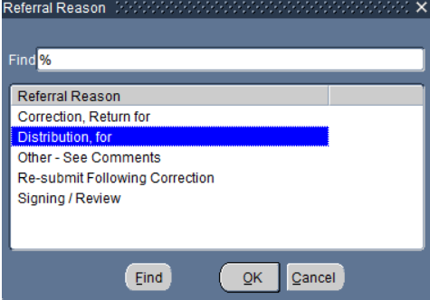
9) Click OK
10) Enter a Referral Comment if it is need. This is an optional field.
11) Click SAVE
12) The Reason now changes from Signing/Review to For Distribution
Navigate to the Locate File screen
Click the Documents for Signing Inbox
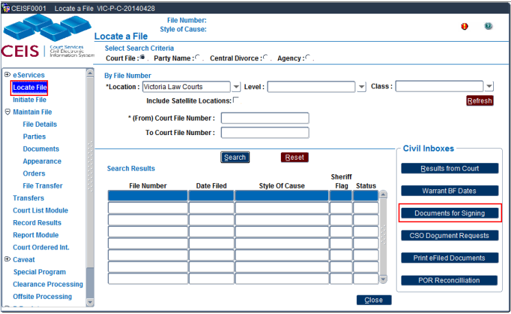
Select the file with the blue line
Click the View button
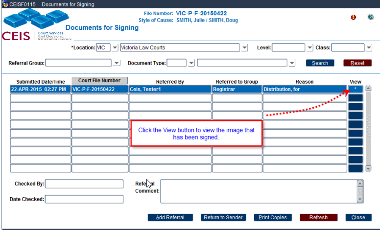
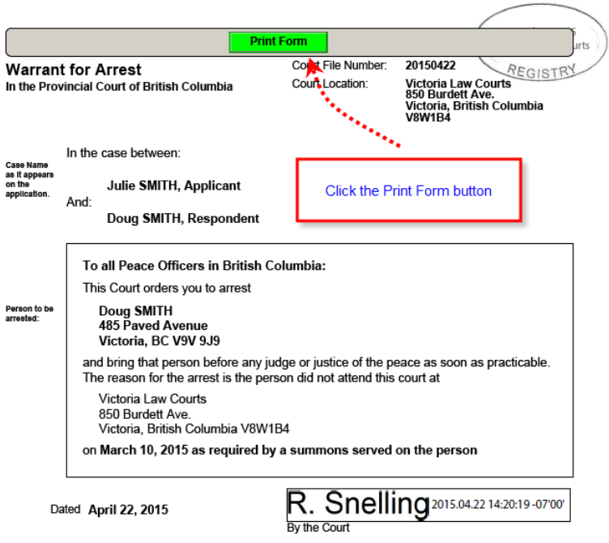
NOTE – The confirmation browser window does not appear at this stage because you are not saving another copy of the document only printing it.
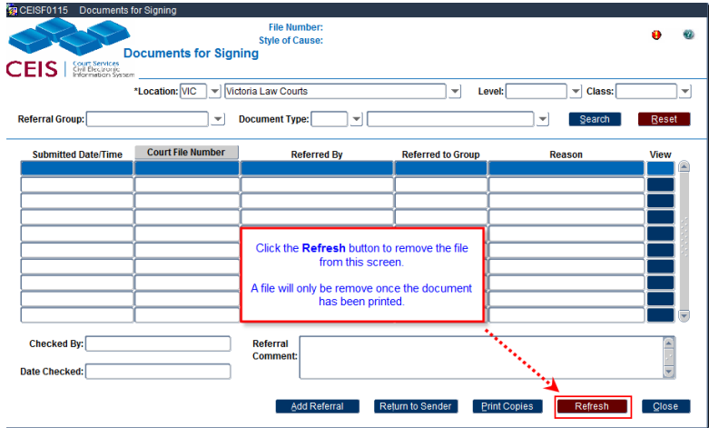